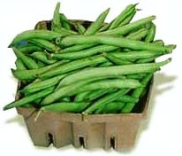

La siembra
Fecha: A fines de abril, mayo y junio.Forma: Directamente sobre el cantero, en casillas (huequitos) y en filas.
Distancias: 20 centímetros entre plantas y 70 centímetros entre filas.
Cantidad de semillas (para 10m2): 100 gramos.
¿Qué tenemos que hacer para cuidar nuestro cultivo?
La cosecha
Producción de semillas
Elegir plantas sanas, grandes y fuertes, y dejarlas seguir su proceso para que den semilla. La chaucha se deja madurar en la planta para luego reservar los granos.